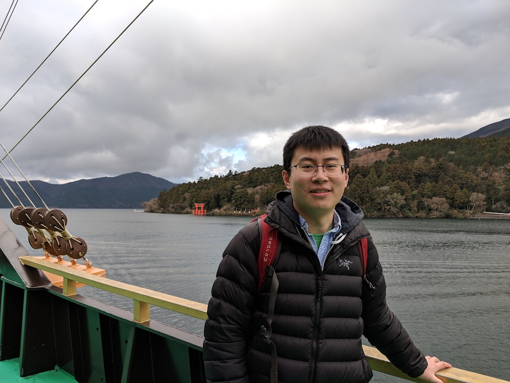

About Me
My Research
Publications
Curriculum Vitae
Photo Gallery
Helpful Links

At Lake Ashi, Dec. 2018
Welcome to my personal website!
I am a Postdoctoral Fellow in Department of Chemistry and Chemical Biology, Harvard University.